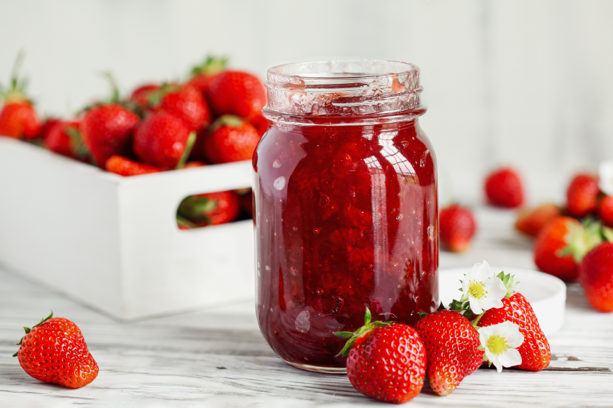

Strawberry Jam

Description
Some sweet strawberry, exceedingly rare, however, I have a feeling it may not be so for you. Perfect with Thaylen bread, just make sure it isn’t poisoned. Also, don’t take it near an Elsecaller, I heard it isn’t very popular with them.
Ingredients
- 12 cups strawberries
- 1/2 tsp butter
- 3 cups granulated sugar
- 1 package low-sugar-required pectin
Steps
- Remove stems and leaves from strawberries. Crush them to a chunky pulp - it should result in about 6 cups.
- Put crushed strawberries in a medium-sized pot. Add butter and sugar. Sprinkle pectin over the sugar.
- Mix everything together, bring to boil over high heat. Reduce heat to medium, then simmer 20-30 minutes until gelled.
- To tell when the mixture has hit the gel point, either use a cooking thermometer (gel point is 220 degrees Fahrenheit at sea level, and decreases with elevation) or dip a spoon in the boiling mixture, pop the spoon in the freezer for a minute to cool, then see if the jam on the spoon has hit a consistency that you like yet. You'll want to look for a skin forming over the spoon, and the jam not just being thickened, but gelled up and holding together.
- If you can the jam, leave 1/4 inch headspace and process for 10 minutes (longer at higher elevations).
- To freeze the jam, place the jam in plastic containers, and freeze.
Credits to jozomby for the recipes
Back to home page